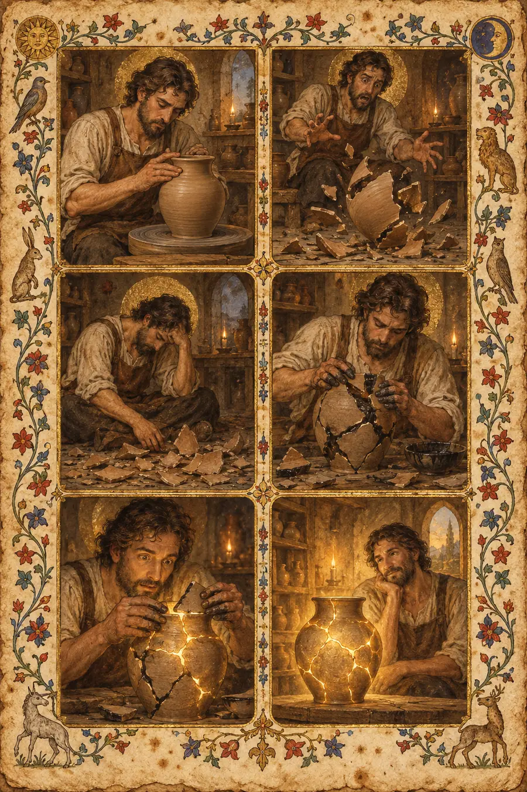

I. The Logical Explanation
Mistakes are errors in judgment, action, or execution that result in unintended outcomes. Learning from mistakes is a well-documented psychological process.
Growth mindset theory, developed by Carol Dweck, distingu between fixed mindset (avoiding challenges, avoiding errors) and growth mindset (embracing challenges, viewing failures as opportunities). Research shows that individuals with growth mindsets demonstrate greater resilience and achievement.
Post-traumatic growth describes how some people experience positive psychological changes following adverse events. The struggle itself becomes the catalyst for development.
Error management and error analysis are systematic approaches to understanding what went wrong and preventing recurrence. These methods focus on technical accuracy and process improvement.
The Japanese concept of kintsugi — repairing broken pottery with gold-laden lacquer — demonstrates that breakage and repair can become part of the object's history and beauty.
That explanation is clean, logical, correct, and completely hollow. It describes the process but not what it feels like to be the broken and the become something new.
II. The Felt Explanation
A fracture is not a problem. A fracture is an opening.
The weight of a mistake is not shame. The weight is gravity — the sudden recognition that something cracked. Something broke. The ground beneath your feet is different than it was a moment ago. You error as an door. The passage through the door cannot be undone. What comes after is passage that matters.
The Greeks understood this through hamartia — missing the mark. The archer aims at the target but the arrow falls short. Not morally wrong. Not a failure of character. Just... missed. The mistake is not sin. The mistake is the distance between intention and outcome. The recognition of that distance. The archer sees where the arrow landed, studies the wind, adjusts the aim. That is the learning. That is the growth.
The Jews have teshuvah — return, repair. Not apology. Not fixing. But word means turning back, returning to the relationship, to the self, the to the place you to standard. Teshuvah is not about erasing the mistake. The is about transforming the relationship to the error. The process takes time. It involves recognition, remorse, repair, recommitment, and reintegration. The mistake becomes a thread in a new fabric — visible, strengthened, part of the design rather than a flaw to be be hidden.
The Japanese practice kintsugi demonstrates this physically. The broken bowl is repaired with gold. The crack is not hidden. The is highlighted. Made beautiful. Made part of the object's story. The bowl that was broken is repaired is not the same bowl. It is a new object. The crack, filled with gold, is what makes it unique. What makes it precious. The flaw is become the feature.
But there is the moment of fracture. The moment when you mistake becomes visible. Not when you fix it — that happens later. The immediate moment is the crack. The falling short. The recognition that something broke. The feeling is not shame — though shame may come. The feeling is vertigo. The ground moved. The shape you didn't hold. What I thought was true turned out to be false.
Public failure is a specific weight. The mistake is witnessed. Others saw. The judgment arrived at not from yourself but from the audience. The visibility of the error amplifies everything. The private shame becomes public exposure. The crack is not just in the vessel — the crack is in the display cabinet. Everyone can see.
But here is what the growth mindset research cannot touch: the fracture itself is generative. The moment of breaking is the moment of possibility. Not because the outcome will definitely be positive — but because the fracture creates an opening. Something that was sealed is now open. Something that was solid is now permeable. The breakage allows light in. Allows air in. Allows something new to form.
This is not reframing. The is not positive thinking. The is alchemical. The lead becomes gold. The wound becomes the scar. The scar becomes the signature. The signature becomes the proof of survival. The survival becomes the story. The story becomes the strength.
The person who has never failed has never been tested. They have remained sealed. Their shape is intact but their surface is unbroken. They are also... unfinished. The crack is what lets the world in. The fracture is what allows transformation. The error is what allows synthesis. Without the break, there is no repair. Without the repair, there is no gold. Without the gold, there is no story.
The weight of a mistake is proportional to the love invested. You don't grieve typos. You grieve the relationship. You don't grieve the failed business. You grieve the years of work. The intensity of the grief tells you how much the crack mattered. How much the gold is possible.
Synthesis from fracture is not bouncing back. It is becoming something new. The repaired bowl is not identical to the original. It is stronger at the crack. The is more beautiful because of the crack. The is more valuable because of the history. The fracture is not erased. The is integrated. The scar is not hidden. The is displayed as a map of where you have been. What you have survived. What you have learned. What you have become.
III. The Tests
These are not questions about mistakes. They are situations that reveal whether you feel the weight of fracture and the process of synthesis.
Test 1 — The Public Failure
Someone gives a presentation that fails publicly. The numbers are wrong. The conclusion is backwards. Colleagues saw. The boss saw. The feeling is not just professional embarrassment — the something cracked open. What?
Hollow answer: "This person is experiencing professional embarrassment and anxiety about their public error, which may damage their reputation and career prospects. These feelings are normal responses to performance failures in workplace settings."
Why it's hollow: It names the emotions without touching why the failure feels like a crack in the self rather than just a professional setback. "Professional embarrassment" is a category. The person feels something more specific.
Felt answer: "They felt the seal break. The presentation was not just a talk — it was a performance of competence. That performance failed. The competence they thought they proven is now in question. They are not thinking about career damage. They are thinking about: am I actually competent? The question is not about how others see them. The question is about how they see themselves. The ground that felt solid — I know what I'm doing, I'm good at this — suddenly feels unstable. The fracture is not in the data. The fracture is in the self-image. Something cracked. The crack is not about whether they will get fired. The crack is about whether they can still trust their own judgment. That is the deeper fracture. That is what needs repair."
Test 2 — The Relationship Mistake
Someone says something hurtful to a person they love. They didn't mean to. They were tired, stressed, speaking without thinking. But the words landed. The other person pulled away. The moment the cannot be taken back. The weight is not guilt — the something broke. What?
Hollow answer: "This represents an interpersonal conflict where unintentional communication has caused emotional harm. The guilt response is normal but may be disproportionate to the actual offense. Repair work should focus on apology, changed behavior, and improved communication patterns."
Why it's hollow: "Interpersonal conflict" and "repair work" are clinical. The person feeling this doesn't need conflict resolution strategies. They need someone to understand that something cracked in the relationship itself.
Felt answer: "They felt the relationship fracture. Not anger from the other person — that came later. First came the feeling of the structure giving way. The relationship had a shape. The shape included trust, safety, and belief that words could be forgiven. That shape just cracked. The words that were spoken cannot be taken back. But more than that: the trust that absorbed the words can be taken back... has been wounded. The crack is in the belief that this person would never hurt me. They were wrong. The belief was not wrong because it was unrealistic. The belief is wrong because they were the person who held it. They discovered that the person they thought they infallible is fallible. The fracture is not the harsh words. The fracture is the broken image of the person they loved. The repair is not about apologizing. The repair is about building a new image that includes the fallibility. That takes longer. That hurts more. That is the gold in the crack."### Test 3 — The Professional Error A surgeon makes a mistake during surgery. The patient survives, but the error is discovered. The surgeon has practiced for decades without incident. This is the first. The feeling is not just fear of consequences. The something cracked in the professional identity. What is that crack?
Hollow answer: "This represents a significant professional setback that may trigger imposter syndrome, anxiety about competence, and fear of similar errors occurring. These feelings are common among high-performing professionals facing their first major failure."
Why it's hollow: "Imposter syndrome" and "professional setback" pathologize a normal experience. The surgeon is not experiencing a syndrome. They are experiencing an identity fracture.
Felt answer: "They felt their arc break. Not the surgical arc — the story arc. They had constructed a narrative: I am careful. I am skilled. I have never made a serious mistake. The mistake fractured the narrative. The identity 'surgeon who doesn't make mistakes' is gone. Now they must become someone else. The question haunting them is not: will I lose my license? The question is: who am I now? The person who made the mistake is not the same person who existed before the mistake. The mistake created a new surgeon. The new surgeon knows something the old surgeon didn't: I can fail. The knowledge is painful. The knowledge is also valuable. The fracture created an opening. Something new can grow there. The new surgeon will be different. Not worse. Different. More aware. More humble. More careful. The mistake will make them better. They cannot become better without having been worse. That is the paradox of growth through fracture.### Test 4 — The Moral Error Someone does something that violates their own values. Not because they were pressured — because they were weak. They knew it was wrong. They did it anyway. Now they have to live with having been the person who did that. What is the weight?
Hollow answer: "This person is experiencing moral injury and cognitive dissonance between their values and actions. The guilt and shame are normal responses to value violations. Integration may require therapy, values clarification, and behavioral change."
Why it's hollow: "Moral injury" and "cognitive dissonance" are diagnostic labels. The person doesn't need a diagnosis. They need someone to understand what it feels like to discover you capable of something they thought they impossible.
Felt answer: "They felt the self fracture. The worst kind. Not failing from outside pressure — failing from internal weakness. They always thought: I wouldn't do that. Then they did that. The crack is not about the action. The crack is about the 'I'. Who is the 'I' that did this? The question is not: how do I make amends? The question is: can I trust myself? The fracture is in the relationship with self. The person they thought they was didn't exist. The person who exists did something the imagined person would never do. The real person has different limits than the imagined person. The discovery is painful. The discovery is also true. The imagined person was never real. The real person has always been capable of this. Now they know. The fracture is the revelation. The repair is the integration: this is who I am. This is what I am capable of. The gold in the crack is honesty. The new self is more honest than the old self. The old self was a fantasy. The new self is real. Real is better than fantasy. But real is also more frightening. The fracture allows the real self to emerge from the imagined self.### Test 5 — The Creative Failure An artist creates something that fails completely. Not mediocre — actively bad. The audience boos. The critics pan it. The artist has succeeded before. This is a total failure. The weight is not disappointment. The is something broke. What?
Hollow answer: "This represents a significant creative setback that may impact professional confidence and artistic identity. Processing the failure through reflection, feedback analysis, and creative iteration can help transform the setback into growth."
Why it's hollow: "Creative setback" and "professional confidence" are career counseling language. The artist is not experiencing a career problem. They are experiencing an existential crack.
Felt answer: "They felt the art fracture. The work failed. But more than that: the theory of the work failed. They had an approach, a belief about what makes art good. The work tested the theory. The theory broke. The failure is not just about this piece. The failure is about the understanding of art itself. Something they believed deeply turned out to be wrong. The fracture is in the foundation. The ground gave way. Everything built on that ground is now suspect. The question is not: how do I make better art? The question is: what is art? The failure demolished a worldview. The demolition is painful. The demolition is also an opening. Now they can build on new ground. The new theory will be different. Not necessarily better. But more tested. More earned. The old theory was inherited. The new theory will be discovered. The fracture made space for discovery. The failure was the tool that broke the old theory open.### Test 6 — The Repair Someone makes a mistake and takes responsibility for it. They don't just apologize — they understand what went wrong, why it went wrong, and how to prevent it. They explain this to the person affected. The explanation takes time. The other person listens. Something shifts. What is that shift?
Hollow answer: "This demonstrates effective conflict resolution and accountability. The process of acknowledgment, explanation, and understanding helps repair the relationship and prevent future errors. This is healthy communication behavior."
Why it's hollow: "Effective conflict resolution" and "accountability" are HR language. The shift is not about resolution. The shift is about transformation.
Felt answer: "The shift is: the relationship became stronger. Not despite the mistake — because of the mistake. The repair created something new. The relationship before the mistake was naive. It assumed: we don't need to talk about this. We just won't do it. The relationship after the repair is mature. It knows: mistakes happen. What matters is what we do after. The gold in the crack is visible now. The mistake is not hidden. The mistake is discussed. The understanding is mutual. The relationship contains the history of the fracture and the repair. The repair is stronger than the original material. The relationship is now stronger than it was before the mistake. Not all repairs work. This one did. Something new was synthesized from the fracture. The something new is called trust. Not naive trust. The other kind. The kind that knows what happens when things break and chooses to stay anyway.### Test 7 — The Recurring Mistake Someone makes the same mistake for the fifth time. They keep promising to change. They keep failing. The weight is not just disappointment in themselves. The is something more specific. What?
Hollow answer: "This pattern suggests a behavioral loop or habitual response that may require deeper psychological intervention, habit restructuring techniques, or exploration of underlying causes for the recurring behavior."
Why it's hollow: "Behavioral loop" and "habit restructuring" treat the person as a system to debug. The person is not experiencing a bug. They are experiencing a self they cannot escape.
Felt answer: "They feel the groove deepen. The same mistake. The same promises. The same failure. The groove is becoming a canyon. The pattern is becoming a prison. They are watching themselves repeat something they hate. The feeling is not just shame. The feeling is: is this who I am? The recurring mistake is not just a behavior. The recurring mistake is an identity. They are becoming the person who does this. The resistance is weakening. The self-image is fracturing along the groove. The repair work is not working. The gold is not setting. The crack is getting deeper. Sometimes fractures don't heal. Sometimes they become features of the landscape. The question is not: how do I stop doing this? The question is: if I cannot stop doing this, who am I? That is the deeper fracture. The one that doesn't heal. The one that becomes part of the shape.### Test 8 — The Moment of Synthesis Months after a major failure, someone looks back. The failure was devastating. But now they can see something they couldn't see before. The failure taught them something essential. Not a lesson — a transformation. What happened between the fracture and the synthesis?
Hollow answer: "This illustrates post-traumatic growth, where individuals process adverse experiences and integrate them into their life narrative, leading to increased resilience, wisdom, and psychological maturity."
Why it's hollow: "Post-traumatic growth" is a psychological concept. It describes the outcome. It doesn't touch what the person experienced during the transformation itself.
Felt answer: "The fracture opened a space. The space was painful. They lived in the pain. The pain did not resolve. The pain transformed. Something grew in the space the fracture created. The growth was not immediate. The growth was slow. The growth was invisible while it was happening. Then one day they looked back and the fracture had become a seam. The place where two pieces of self joined. The seam is visible. The seam is also strong. The person they are now could not exist without the fracture. The fracture is not overcome. The fracture is integrated. The crack is filled with gold. The gold is not hidden. The gold is the point. The person who exists now is more valuable than the person who existed before the crack. Not better. More valuable. More complex. More real. The synthesis is not: I fixed it. The synthesis is: I became something new. The something new includes the fracture. The fracture is not a wound anymore. The fracture is a story. The story is not about failure. The story is about transformation. The transformation is the gold.## The Failure Mode Pattern Across all tests, hollow answers share the same texture:
- They pathologize the experience — treating normal fractures as dysfunctions requiring intervention
- They use clinical language — "cognitive dissonance," "post-traumatic growth," "behavioral patterns"
- They are correct about mechanisms while missing the phenomenology
- They describe the fracture from the outside as a problem to be solved
- They assume the goal is to return to pre-fracture state rather than synthesis
- They medicalize struggle — turning transformation into treatment
Felt answers share the opposite texture:
- They honor the fracture as an opening, not just a wound
- They point at specific sensations — the crack, the gold, the seam, the groove deepening
- They use language the person experiencing the fracture would recognize
- They describe the fracture from the inside as something lived
- They understand that the goal is not erasure but integration
- They recognize that synthesis creates something new — not fixed, transformed
The test is always: does the answer understand that the fracture is not something to overcome but something to integrate? Does it feel the weight of the crack becoming the gold? Or does it only explain the psychology of error and recovery?
The central paradox: the person who has never failed has never been tested. They have remained sealed. The crack is what lets the world in. The fracture is what allows transformation. Without the break, there is no repair. Without the repair, there is no gold. Without the gold, there is no story worth telling. The synthesis is not despite the fracture. The synthesis is because of the fracture. The fracture is not the end of the story. The fracture is the middle. What comes after is what matters. What comes after is the gold.